Ciência Útil
assuntos reais da ciência, explicados em minutos
Um canal de divulgação científica em português, no YouTube e no TikTok. Cada vídeo parte de uma fonte que dá para conferir — um artigo em revista científica, um relatório de agência ou uma série de medições — e diz o que foi medido, o que se encontrou, o que ficou em aberto e o que não pôde ser conferido. Esta página guarda os 17 vídeos publicados, cada um com a sua descrição e as suas fontes.
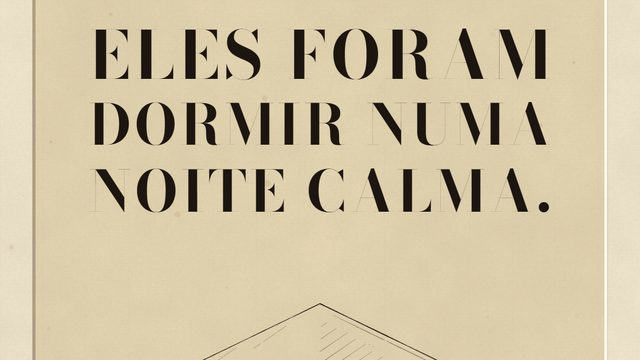
#017Lago Nyos: o que matou 1.700 pessoas dormindo numa noite calma?
26 de outubro de 2026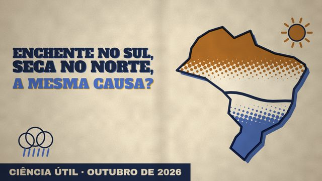
#016Enchente no Sul, seca no Norte: o El Niño de 2026 é o mais forte já medido?
25 de outubro de 2026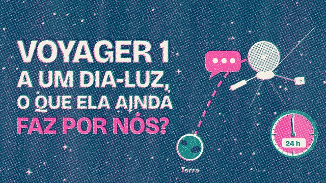
#015Voyager 1 a um dia-luz da Terra: o que ela ainda pode fazer por nós?
24 de outubro de 2026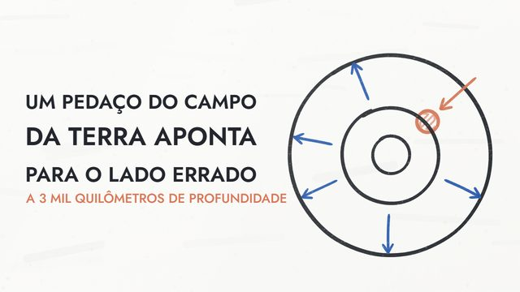
#014Um pedaço do campo magnético da Terra aponta para o lado errado
23 de outubro de 2026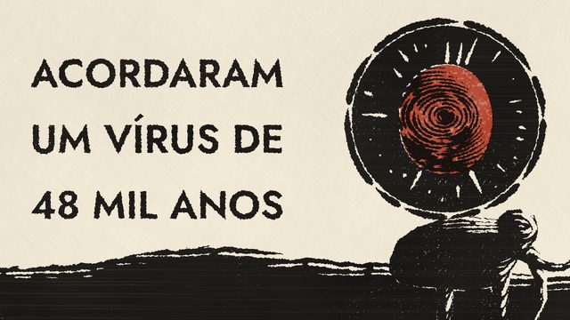
#013Cientistas acordaram um vírus de 48 mil anos. O que mais está no gelo?
22 de outubro de 2026 #012Relógio do Juízo Final: faltam 85 segundos para o fim do mundo?
21 de outubro de 2026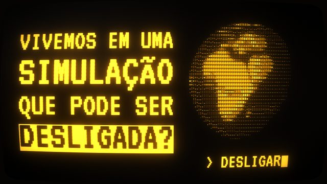
#011Teoria da simulação: e se vivemos em uma simulação que pode ser desligada?
20 de outubro de 2026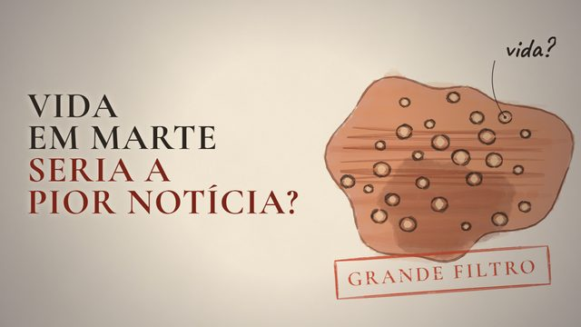
#010O Grande Filtro: e se encontrar vida em Marte for a pior notícia da humanidade?
19 de outubro de 2026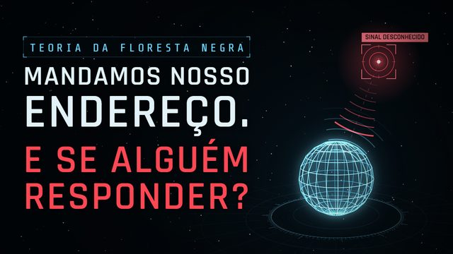
#009Teoria da Floresta Negra: mandamos o endereço da Terra para o espaço. Foi um erro?
19 de outubro de 2026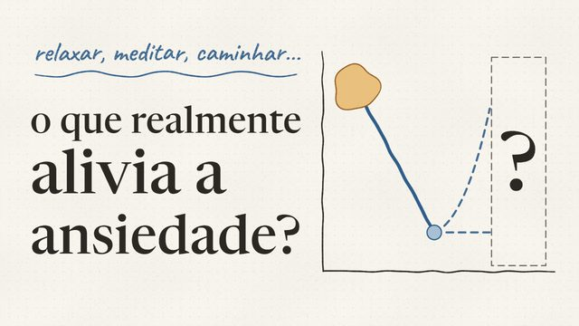
#008Como ser menos ansioso: exercício físico ou mudança de hábitos?
18 de outubro de 2026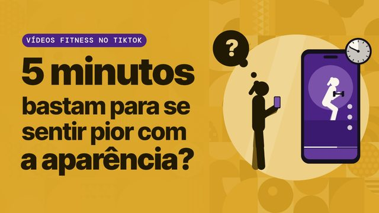
#007Vídeos fitness no TikTok: 5 minutos bastam para se sentir pior com a aparência? Um estudo testou
17 de outubro de 2026 #006Motivação para fazer exercício: um chatbot consegue ajudar quem precisa?
17 de outubro de 2026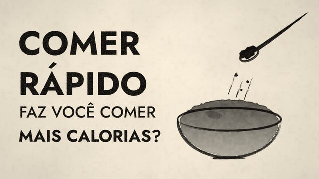
#005Comer rápido faz você comer mais calorias? Um estudo testou a textura da comida
17 de outubro de 2026 #004Notificações do celular atrapalham mesmo se você ignorar? Um estudo testou
16 de outubro de 2026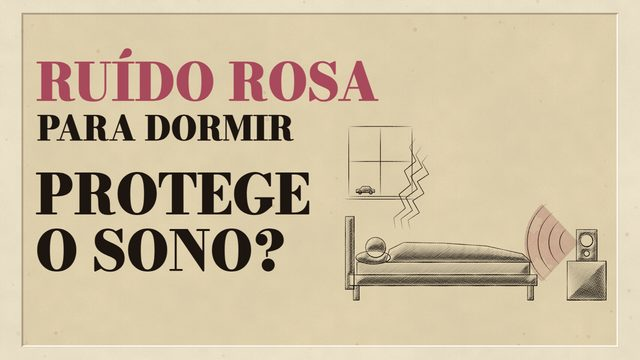
#003Ruído rosa para dormir protege o sono? Um estudo testou com barulho de rua
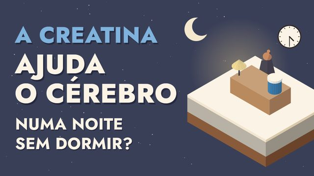
#002Creatina para o cérebro funciona? Um estudo testou numa noite sem dormir
15 de outubro de 2026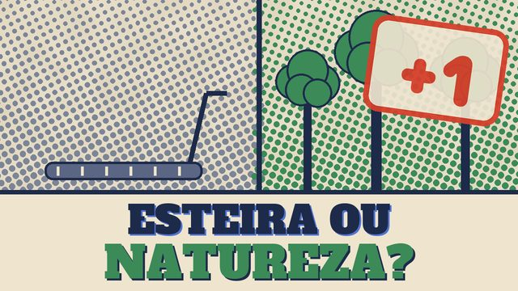
#001